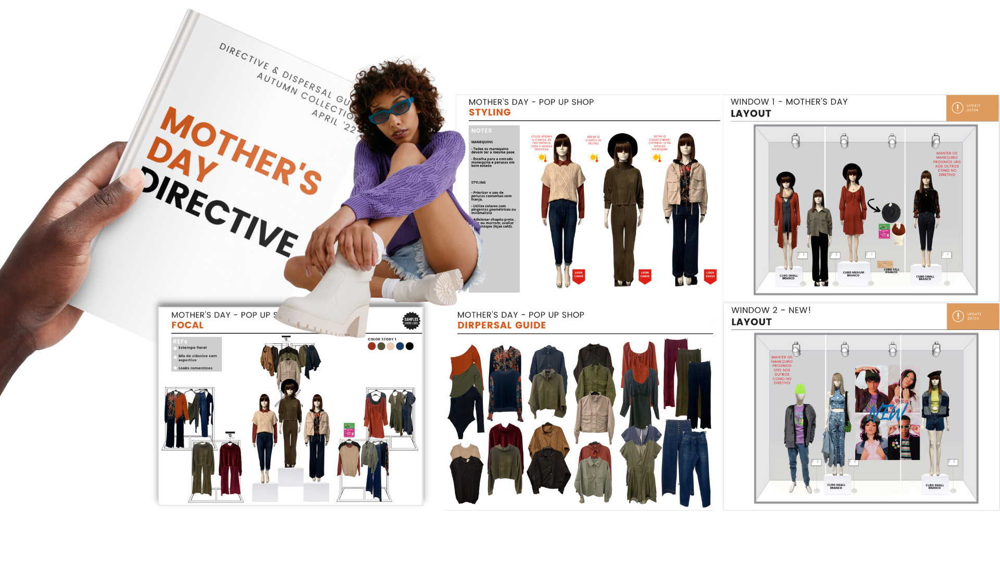
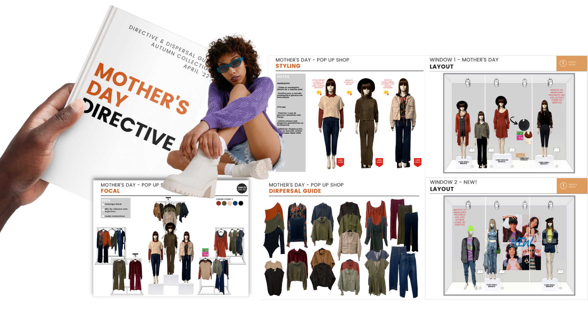

image direction & VM | 2019-2022
main responsibilities:
sales growth, product merchandising, KPIs management, VM floor sets, money and customer journey mapping.
where:
Forever 21 | BR
 

vm management | 2013-19
main responsibilities:
working as a VM manager and brand ambassador for the Latin America market (15 countries). I was an active member at LATAM's expansion and I opened +40 stand-alone stores across the region. I had an omnichannel actuation working with retail, franchise, digital and wholesale clients.
where:
Desigual | LATAM

vm management | 2008-2013
main responsibilities:
i was the VM specialist for luxury brands (textiles, leather & luggage). I headed Dufry's VM Guide project that was spread internationally.
where:
Dufry Group | GRU airport | Brazil